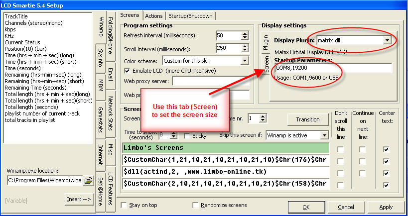

Matrix Orbital serial display configuration
Select setup (highlighted in red):

Setup screen will appear:
The important settings are highlighted in red.
- Select "Matrix Orbital (Serial)".
- Set the correct LCD Size for your display.
- Configure the COM port that your display is attached to. If your display is an USB display, then choose the virtual COM port that has been assigned to your display.
- Configure the baud rate.
- [none currently known]
Press "Apply" - LCD Smartie will now connect to your display.
Press "Matrix Orbital settings"
Adjust the contrast and brightness to suit your conditions. [Not all settings are supported by all displays - for example contrast will not work with VFDs].
Press OK, and then OK again. Your Matrix Orbital display should now be working correctly with LCD Smartie!